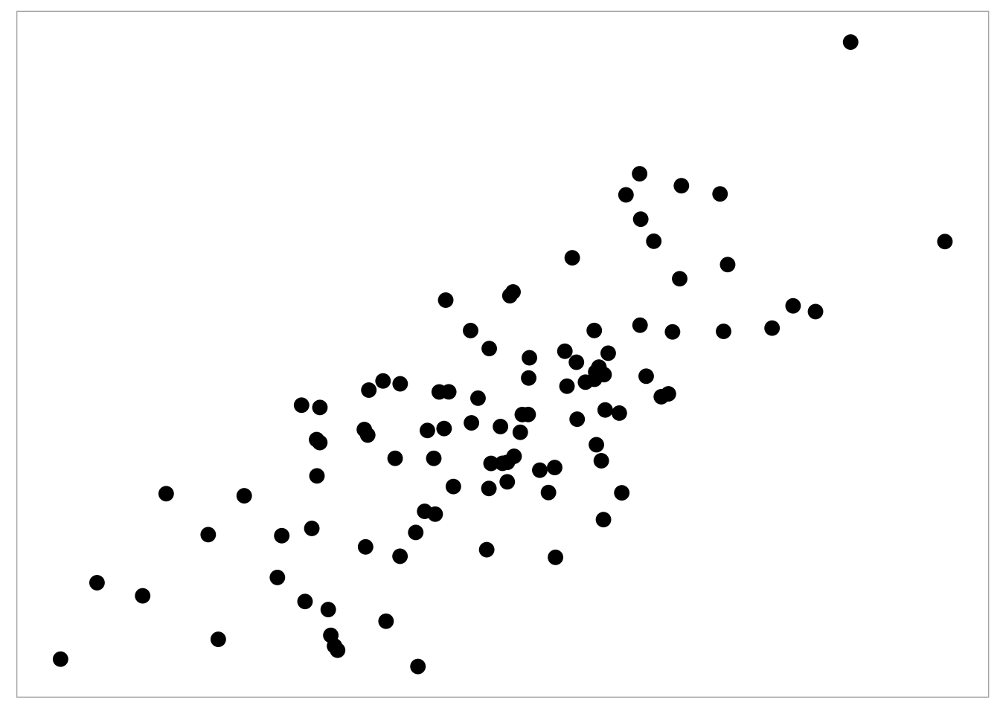
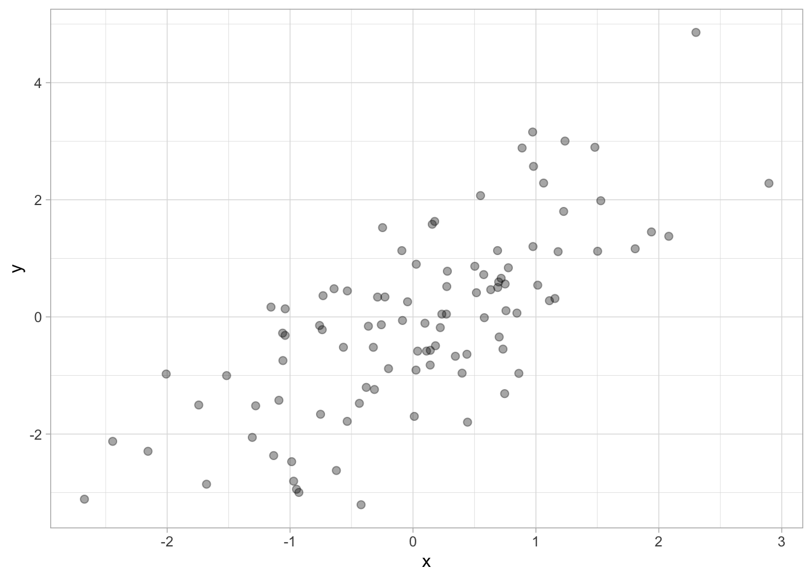
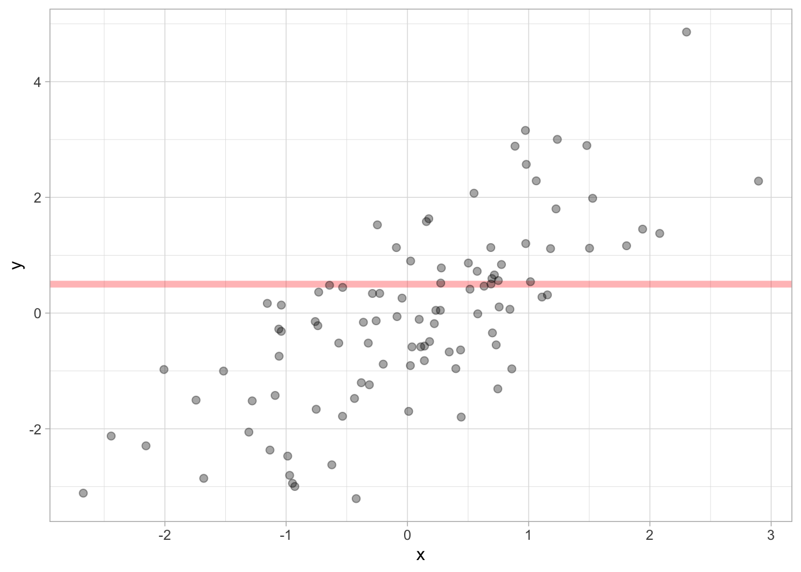
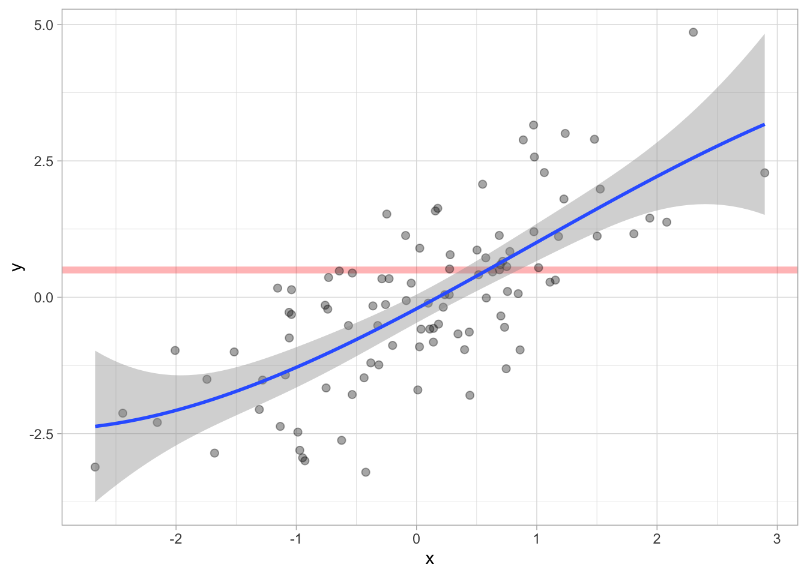
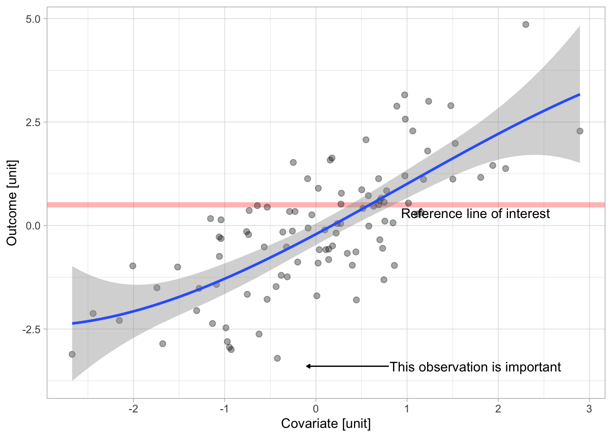

Compared to what?
comparisons
scatter plot
annotations
Rcode
examples
layering
visual anchors
At the heart of quantitative reasoning is a single question: Compared to what? - Edward Tufte
Effective visualisations communicate complex statistical and quantitative information facilitating insight, understanding, and decision making. But what is an effective graph? It is one that enables visual comparisons of data within the reviewers eye span, and adapts to the audience in a manner that best allows the key messages to be understood.
During the design of data visualisation it is helpful to keep in mind the purpose – the “Compared to what?” (Tufte 1990).
To facilitate effective comparisons there are a number of design options in the toolbox which can be used including layering, alignment, proximity and ordering. In this post we focus on how to focus and support specific comparisons through the use of a visual hierarchy.
Adding context through visual hierarchy
Utilising and layering visual anchors such as grid and reference lines, annotations and other cues can draw attention to the comparison of interest. To illustrate what we mean by anchors, consider the graph below: a stripped down scatter plot.
There is not a lot of information carried in this plot. If you are quantitively trained you may automatically be comparing the relationship between the x- and y-variables, assessing if there is a (linear or non-linear) relationship by eye. You may also be on the look out for unusual observations. But without the appropriate level of contextual information we have to make various assumptions that may not hold (e.g. what scale are the observations plotted on.)
Now lets consider adding back in contextual information step by step. We can start to layer on visual anchors to meet specific goals. For example, by adding grid lines and axes we can help the reviewer identify the x- and y-values for specific observations.

Adding a reference line can further help distinguish between observations and also draw comparisons to the reference i.e. if an observation or how many observations are above and below the line of interesting. Adding a reference line can also facilitate assessments that compare the distance between the reference line and observation.

We can also fit and display a regression to help the reviewer assess the association between the x- and y- variables. In this example, we fit a spline along with a measure of uncertainty to help assess the spline fit with respect to the data sample.


Finally we can add additional annotations such as a description of the reference line and highlighting a specific observation that may hold a degree of importance to the analysis. We also add labels for the x and y- variables providing additional context for the revieiwer.
The final example illustrates how layering visual anchors on to a plot can guide the focus of the reviewer to specific comparisons of interest such as the association between the outcome and a covairate of interest, the strength of the association (model fit) and also highlight specific observations of interest).
References
Tufte, Edward R. 1990. Envisioning Information. Cheshire, Conn.: Graphics Press.